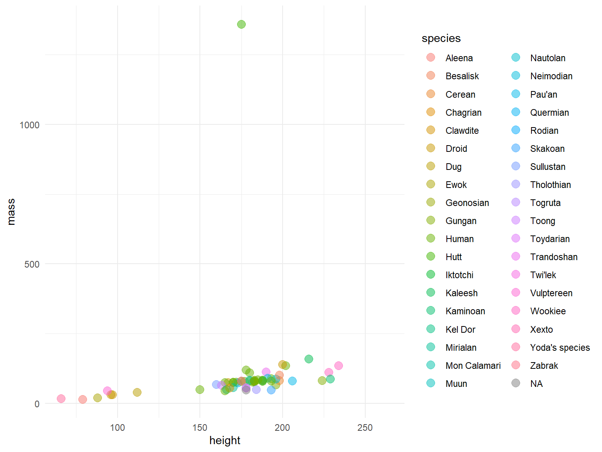

Most of the visualizations are just there to see.
While they can convey a lot of information, they offer no capacity to dig deeper.

Interactive plots are useful for letting people play with some portion of the visualization.
Zooming and hovering are two example of interactions
We can take our interactive plots and add some neat features to them.
Reactivity responds directly to a users input and changes accordingly.
Reactive plots are created through Shiny.
It is incredibly flexible and most of what you need can be wrapped into 2 files.
server
ui
The server is where all of the wild stuff happens.
The ui does exactly what you might think – controls the look and the inputs.